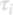
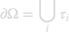

BoundaryVert
BoundaryVert is a class derived from the superclass BoundaryElement that stores the discretized boundary elements

together with linear shape elements which perform an interpolation from the vertices to the boundary interior.

Contents
Initialization
% set up array of boundary elements
obj = BoundaryVert( mat, p1, inout1, p2, inout2, etc );
After initialization, the BoundaryVert elements hold in addition to the properties of the BoundaryElement class the following element
- obj.nu global degree of freedom for vertices of boundary element
Methods
In addition to the methods of the BoundaryElement class, the BoundaryVert class has the following methods
% shape element and positions % X,Y are triangular coordinates [ f, pos ] = basis( obj, x, y ); % number of global degrees of freedom n = ndof( obj ); % plot value or vector array plot( obj, varargin );
Examples
- demoboundaryvert01.m - Plot linear shape elements for unit triangle.
Copyright 2022 Ulrich Hohenester